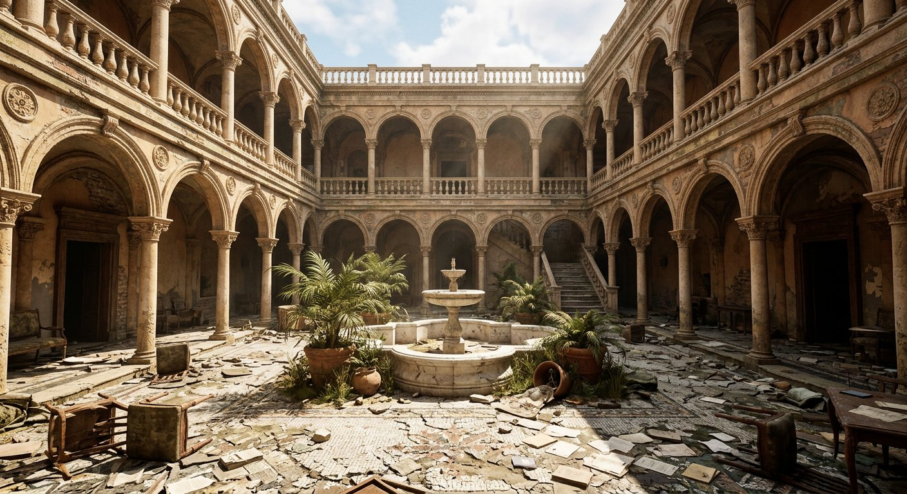
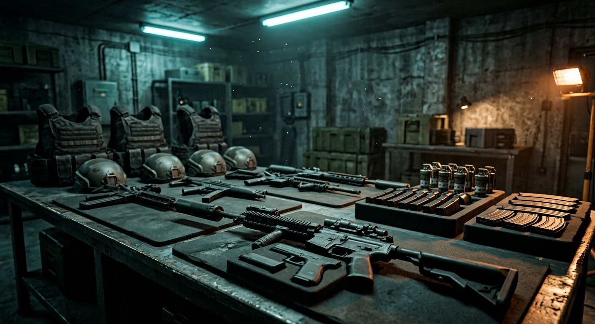
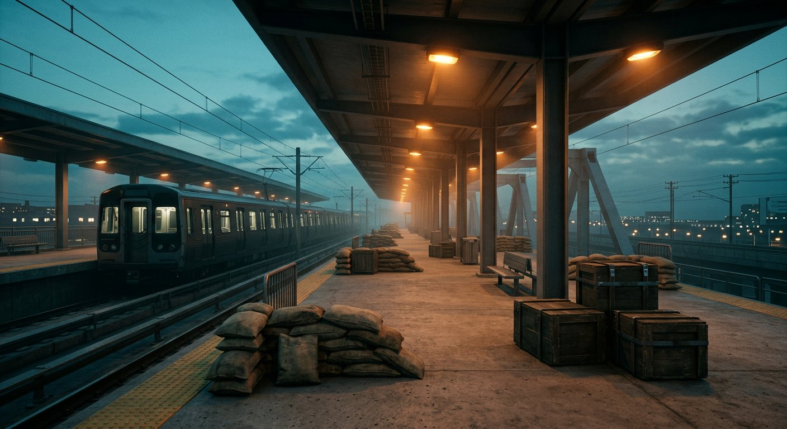

Transit
Lignes de vue longuesRécompense un fusil d'assaut stable. Privilégiez le contrôle de recul sur la cadence.
Cinq contre cinq, aucune réapparition, une économie par manche. Le format le plus exigeant de Delta Force — et celui où l'utilitaire compte autant que l'adresse.
Quatre secondes pour poser, six pour désamorcer. Tout le mode tient dans cet écart.
| Mécanique | Détail |
|---|---|
| Format | 5 contre 5, un seul exemplaire de chaque opérateur par équipe. |
| Réapparition | Aucune pendant une manche. Un joueur perdu, c'est 20 % de l'équipe. |
| Attaquants | Poser le NC8 sur un site et le protéger jusqu'à l'explosion, ou neutraliser les cinq défenseurs. |
| Défenseurs | Empêcher la pose, neutraliser les attaquants, ou désamorcer le NC8 une fois posé. |
| Sites | Deux sites d'objectif, A et B. |
| Durée de manche | Environ 1 minute 55. |
| Pose | 4 secondes. |
| Désamorçage | 6 secondes, via un terminal Haavk portatif. |
| Victoire | Première équipe à remporter le nombre de manches requis ; les camps s'inversent à la mi-match. |
| Plateformes | PC et mobile pour la bêta ; console annoncée ensuite. |
Une phase d'achat ouvre chaque manche. Les Alloys y financent armes, accessoires, armure et équipement tactique.
Certaines armes restent verrouillées dans les présélections jusqu'à déblocage permanent par jeton. Les jetons s'obtiennent en accumulant de l'EXP Detonation.
Conséquence pratique : votre arsenal en Detonation ne reflète pas celui de Warfare. Prévoyez de dépenser vos premiers jetons sur une arme polyvalente plutôt que sur une curiosité.

Récompense un fusil d'assaut stable. Privilégiez le contrôle de recul sur la cadence.
Portées courtes à moyennes. Dégagez les angles méthodiquement et ne collez jamais un coéquipier dans un passage étroit : une seule grenade punirait la moitié de l'équipe.
Une seule idée structure toute l'attaque : après la pose, votre objectif change complètement.
Vous contrôlez la seule ressource que les défenseurs n'ont pas : le choix du site. Ne vous engagez pas sur le premier site approché.
Cherchez l'information, pressez un secteur, et acceptez de tourner si la défense s'est empilée.
Quand l'équipe exécute, elle exécute ensemble. Cinq poussées espacées de quelques secondes transforment un 5 contre 5 en une série de 1 contre 2.
Ne lancez pas la pose simplement parce que vous êtes arrivé sur le site. Demandez-vous d'abord qui vous couvre.
Après la pose, changez complètement d'objectif : vous ne prenez plus le site, vous rendez le désamorçage impossible. Tenez des angles croisés sur l'engin, sur la route de reprise, ou sur le coéquipier qui le garde.
Ne portez pas le NC8 dans le premier duel dangereux. La bombe est un objectif, pas un trophée.
La défense est affaire d'information et de temps, pas d'éliminations rapides. Vous n'avez pas besoin de neutraliser cinq attaquants en vingt secondes.
Tenez des positions où l'adversaire doit soit s'exposer, soit dépenser de l'utilitaire pour vous déloger.
Ne sur-pivotez pas. Un attaquant isolé qui se montre cherche souvent à vous attirer loin du vrai site.
La bonne information n'est pas « j'entends quelqu'un en A ». C'est « trois en A, bombe vue ».
Pour une reprise de site, arrivez groupés. Attendre deux secondes un coéquipier vaut mieux qu'un désamorçage solitaire interrompu.
Même commencer un désamorçage a une valeur tactique : cela force les attaquants à se révéler.
Le palier d'armes s'ouvre progressivement : impossible d'écraser les premières manches avec une arme de fin de partie, même avec l'argent.
| Manche | Alloys | Armes débloquées |
|---|---|---|
| Manche 1 | 800 | Pistolets uniquement |
| Manche 2 | 1 600 | PM et fusils à pompe d'entrée de gamme |
| Manche 3 | 2 600 | PM supérieurs et fusils d'assaut intermédiaires |
| Manche 4+ | 7 000 | Fusils haut de gamme, snipers, mitrailleuses |
| Source | Avant | Après |
|---|---|---|
| Élimination à l'arme standard | +400 | +500 |
| Victoire de manche | +3 200 | +3 300 |
| Prime de 2ᵉ défaite consécutive | +3 000 | +3 100 |
| Prime de 3ᵉ défaite consécutive | +3 600 | +3 800 |
Les manches d'économie sont nettement plus pardonnantes qu'avant : une équipe qui perd le début de partie se réarme plus vite. Fraguer dans une manche perdue d'avance reste payant — encaissez les crédits et revenez en achat complet.
| Objet | Alloys | Type |
|---|---|---|
| G17 (pistolet de secours) | Gratuit | Arme |
| Grenade aveuglante / Disque Whirlwind | 200 | Utilitaire |
| Gilet balistique seul | 600 | Protection |
| Casque + gilet balistique | 1 000 | Protection |
| SMG-45 | 1 400 | Arme |
| SR9 2Tap | 1 800 | Arme |
| AS Val (baissé à 2 500 le 15/10) | 2 500 | Arme |
| MDR (relevé le 15/10) | 2 700 | Arme |
| SCAR-H High Caliber | 2 700 | Arme |
| K437 (relevé le 15/10) | 3 000 | Arme |
| MP7 | 3 300 | Arme |
| AS Val Armor Pen Expert | 3 500 | Arme |
| AWM Instant Kill | 5 500 | Arme |

Mise à jour silencieuse : aucun écran d'annonce. Beaucoup de joueurs utilisent encore des builds périmés.
Un fusil standard (AK-12, M4A1 ou RM277) — ou l'AS Val à 2 500 sur économie serrée — comme arme de travail, et un Desert Eagle ou un .357 en secondaire à chaque manche, y compris en pistolet et en éco où les deux revolvers sont devenus réellement compétitifs.
Acheter l'arme la plus chère chaque manche. Si l'achat vous laisse sans armure, sans utilitaire et sans réserve pour la manche suivante, ce n'est pas une amélioration.
Transformer « économiser » en « ne rien faire ». Une manche à bas coût se gagne encore avec de l'utilitaire, une arme de contact et une pression coordonnée sur un site.
Acheter chacun dans son coin. Si trois joueurs sont fauchés, coordonnez la dépense de l'équipe plutôt que d'équiper deux joueurs à fond.
Continuer à jouer le site après la pose. L'objectif a changé : il ne s'agit plus de prendre l'espace mais de rendre le désamorçage impossible.
Entrer en décalé. Cinq pushs séparés de quelques secondes transforment un 5v5 en une série de 1v2.
